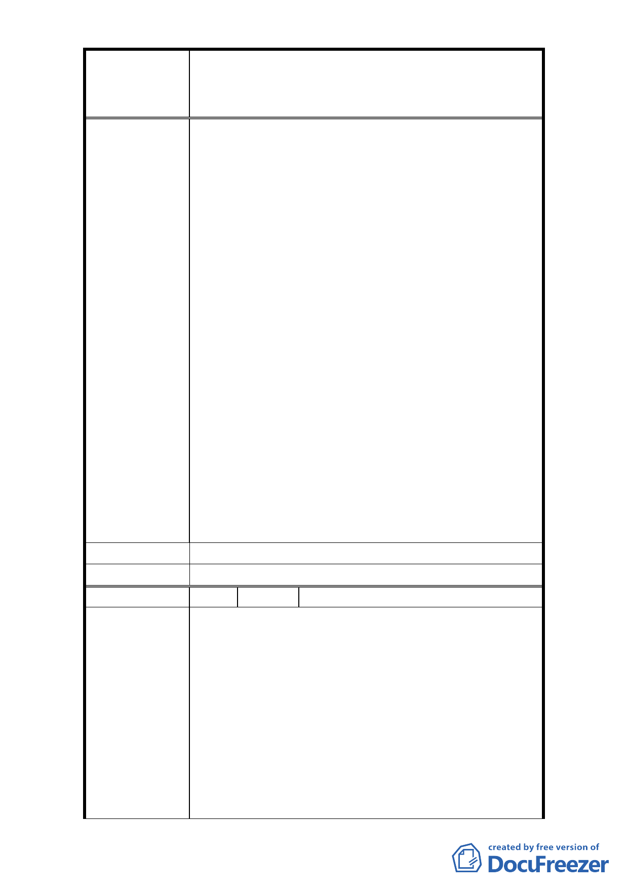

修訂臺北市大安區青田街保存區聚落風貌保存專用區細部計
案
名
畫、變更部分第三種住宅區、第三種商業區(特)為第三種住宅區
(特)(日式宿舍)及第三種商業區(特)(日式宿舍)暨劃定週邊地
區都市設計管制細部計畫案
3、 保持原有計畫。
4、 建議不要變換計畫，但是對於需要改建的住戶需
要給予補償（如減稅或容積獎勵）。
5、 (1)請文化局與都發局出面跟師大與國有財產局
協調，把青田街 2 巷 1、3、17 號跟 9 巷 7 號能與
馬廷英故居、劉榮標舊居整合成完整的區域，一
定是全民之福！(2)雖然台大保管組近來為活化
日式宿舍開放委外，讓民間經營茶館（和平東路
一段 183 巷 7 弄 2 號）及咖啡館(青田街 7 弄 6 號)，
但是沒有可能是給非營利組織以低利貸款及較低
廉租金的方式給老屋受到維持照顧，就不會一個
個躺平或是擔憂遭祝融。(3)已經沒有地上物的公
有地也可以提供平台讓社區居民提出維管企劃後
簽約使用(1 年 1 約)，如都市農園、露天劇場…等。
（金華街口綠地、溫州街綠地）(4)建議設置觀光
散步路線地圖解說牌，許多外國觀光客雖人手一
張地圖，但是常常找不到要去參訪的點。
6、 (1)新計畫對原有的大樹、日式宿舍景觀維護不
足，建議新計畫不要實施。(2)開挖率絕對要設
限。(3)一定要留院深。
市 府 回 覆 意 見 同編號 1 回覆意見。
委 員 會 決 議 同編號 1 決議。
編 號 23 陳情人 許誠真
1. 青田街的價值就在這些老樹和庭院，才能維持房價
越來越高的水準。100%的開挖率，會使得本區的大
樹死光光！這幾年的建案，也有在開挖時原本保留
一小截原本的樹木，但在施工中根本沒有保有牠存
活的土壤與環境，天天被機器廢氣與熱氣蒸騰下牠
陳 情 理 由 就死掉了，建築完工後這個死掉的老木也順理成章
的挖掉，原本翠綠的樹木庭院變成讓人抓狂的水泥
森林。
2. 住宅區中沒有前院直接貼著道路的建築，對於房價
本來就是一個減分的條件，要把青田街弄成整區建
- 26 -